TODO
- response consistency - clarify core questions being asked
- review models already created in ARCHIVE?
- explore response consistency - fix references - what predicts consistency? - consider zero inflated / hurdles with ospan score as preditor
The purpose of this notebook is exploratory analyses of data collected for study SGC3A.
CODE
#misc utilitieslibrary(Hmisc) # %nin% operatorlibrary(broom)library(modelr)library(distributional)library(jtools)library(pwr) #power analysislibrary(mosaic) #favstats#visualizationlibrary(ggpubr) #arrange plotslibrary(cowplot) #arrange shift function plotslibrary(ggformula) #easy graphslibrary(vcd) #mosaic plotslibrary(vcdExtra) #mosaic plotslibrary(kableExtra) #printing tables library(sjPlot) #visualize model coefficientslibrary(ggdist) #uncertainty viz library(ggstatsplot) #plots with stats#models and performancelibrary(report) #easystats reportinglibrary(see) #easystats visualizationlibrary(performance) #easystats model diagnosticslibrary(qqplotr) #confint on qq plotlibrary(gmodels) #contingency table and CHISQRlibrary(equatiomatic) #extract model equationlibrary(pscl) #zeroinfl / hurdle models library(lme4) #mixed effects models library(lmerTest) #for CIs in glmer library(ggeffects) #visualization log regr modelslibrary(nnet) #multinomial logistic regression [not mixed]library(mclogit) #frequentist mixed multinomial logistic regression [mblogit]library(brms) #bayesian mixed multinomials [+ other bayesian reg models]library(tidyverse) #ALL THE THINGS#OUTPUT OPTIONSlibrary(dplyr, warn.conflicts =FALSE)options(dplyr.summarise.inform =FALSE)options(ggplot2.summarise.inform =FALSE)options(scipen=1, digits=3)#GRAPH THEMEINGtheme_set(theme_minimal())
CODE
#IMPORT DATA df_items <-read_rds('analysis/SGC3A/data/2-scored-data/sgc3a_scored_items.rds')df_subjects <-read_rds('analysis/SGC3A/data/2-scored-data/sgc3a_scored_participants.rds')#weird... doesn't respect project level execute dir in yml unless included in index; otherwise breaks render
Exploratory Questions
Consistency | How consistent are learners in their interpretation of the graph? Do they adopt an interpretation on the first question and hold constant? Or do they change interpretations from question to question? Are there any interpretations that serve as ‘absorbing states’ (i.e. once encountered, the learner does not exist this state).
Time Course of Exploration | What is the relationship between response accuracy (and interpretation) and time spent on each item?
Can exploration strategies be derived from mouse cursor activity?
does response time predict interpretation vs. non interpretation?
TODO: - does impasse yield different exploration behavior? (characterize mouse) - does impasse yield more time on task? (characterize response time ? number of answers then de-selected?)
TODO: Think about characterizing how variable the interpretations are across a participant. Do they form an interpretation and hold it constant? Or do they change question to question.
WORKING MEMORY
During the 2021-2022 online replication study, participants completed a working memory task —the OSPAN task- after completing the SGC3A study. We added this task to explore possible sources of variance between individuals on the graph comprehension task.
Here we address the question: Does working memory (as measured by the OSPAN task) help explain performance on the interval graph comprehension task?
First we join the load data for the subset of SGC3A participants who completed the OSPAN task. Note that this is a slightly lower n than the online replication, as a couple of participants failed to finish the OSPAN task, and will be excluded from this analysis.
Rows: 133 Columns: 26
── Column specification ────────────────────────────────────────────────────────
Delimiter: ","
chr (19): subject, term, mode, gender, language, schoolyear, country, effort...
dbl (7): condition, age, totaltime_m, order_num, math_acc, order_acc, weighted
ℹ Use `spec()` to retrieve the full column specification for this data.
ℹ Specify the column types or set `show_col_types = FALSE` to quiet this message.
CODE
sgc3a <-read_rds("analysis/SGC3A/data/2-scored-data/sgc3a_scored_participants.rds") #not scoredsgc3a_items <-read_rds("analysis/SGC3A/data/2-scored-data/sgc3a_scored_items.rds") #not scored##ADD OSPAN DATA TO SUBJECT LEVEL DATA#select needed ospan columnsdf_ospan <- df_ospan %>%rename( OSPAN.weighted = weighted, OSPAN.math_acc = math_acc,OSPAN.order_acc = order_acc) %>% dplyr::select( subject, OSPAN.weighted, OSPAN.math_acc, OSPAN.order_acc) %>%mutate(z_ospan =zscore(OSPAN.weighted),ospan_split =as.factor(OSPAN.weighted >median(OSPAN.weighted)),ospan_split =recode_factor(ospan_split, "FALSE"="low-memory", "TRUE"="high-memory") )#get only the participants for whom we have ospan data df_sgc3a <- sgc3a %>%filter(subject %in% df_ospan$subject)#add q1 state field [3 category summary of interepretation]df_sgc3a <- df_sgc3a %>%mutate(item_q1_state =recode_factor(item_q1_SCALED, "-1"="orth-like","-0.5"="unknown","0"="unknown","0.5"="tri-like","1"="tri-like"),)#join the ospan columns to the scored sgc3a data df_sgc3a <-merge(df_sgc3a, df_ospan)##ADD OSPAN DATA TO ITEM LEVEL DATA#get only the participants for whom we have ospan data df_sgc3a_items <- sgc3a_items %>%filter(subject %in% df_ospan$subject) df_sgc3a_items <-merge(df_sgc3a_items, df_ospan)#define datasetdf_s <- df_sgc3adf_i <- df_sgc3a_items
What is the distribution of performance on the OSPAN task?
CODE
title ="Descriptive Statistics of OSPAN Task Accuracy"ospan.stats <-rbind("MATH"= df_s %>% dplyr::select(OSPAN.math_acc) %>%unlist() %>%favstats(),"ORDER"= df_s %>% dplyr::select(OSPAN.order_acc) %>%unlist() %>%favstats(),"WEIGHTED"= df_s %>% dplyr::select(OSPAN.weighted) %>%unlist() %>%favstats())ospan.stats %>%kbl (caption = title) %>%kable_classic() %>%footnote(general ="MATH = %correct of all math questions; ORDER = % correct of OSPAN ordering (out of 30); WEIGHTED = math*ospan number correct", general_title ="Note: ",footnote_as_chunk = T)
Descriptive Statistics of OSPAN Task Accuracy
min
Q1
median
Q3
max
mean
sd
n
missing
MATH
0.517
0.897
0.931
0.966
1
0.924
0.085
133
0
ORDER
0.000
0.533
0.733
0.867
1
0.678
0.253
133
0
WEIGHTED
0.000
13.448
20.276
24.828
30
19.082
7.391
133
0
Note: MATH = %correct of all math questions; ORDER = % correct of OSPAN ordering (out of 30); WEIGHTED = math*ospan number correct
CODE
# #GGFORMULA | DENSITY HISTOGRAM gf_dhistogram(~z_ospan, data = df_s) +labs(x ="OSPAN (weighted) score",y ="% of subjects",title ="Distribution of OSPAN SCORE",subtitle ="")
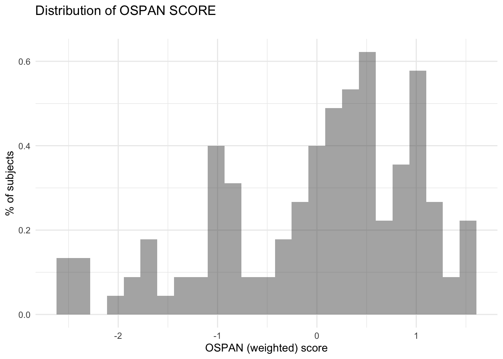
CODE
##GGPUBR | HIST+DENSITY SCORE BY CONDITION/MODEp <-gghistogram(df_s, x ="z_ospan", binwidth =0.5,add ="mean", rug =TRUE,fill ="pretty_condition", #, palette = c("#00AFBB", "#E7B800"),add_density =TRUE)facet(p, facet.by=c("pretty_condition")) +labs( title ="Distribution of OSPAN Score",subtitle ="The shape of the distribution of OSPAN scores is similar across conditions",x ="OSPAN (weighted) score", y ="number of subjects") +theme_minimal() +theme(legend.position ="blank")
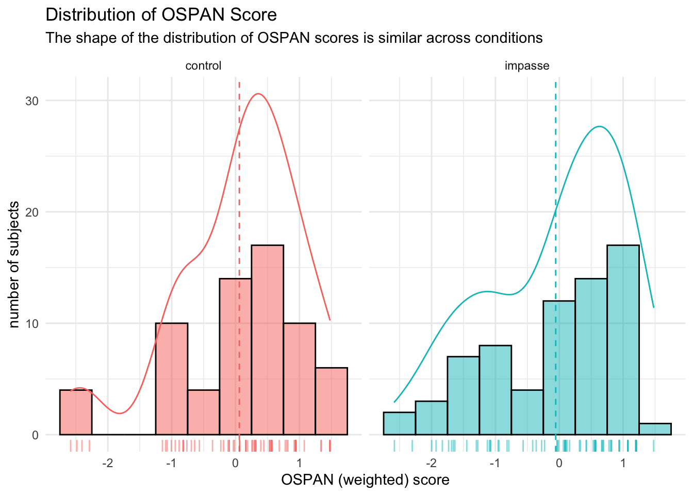
CODE
#GGSTATSggbetweenstats(y = z_ospan, x = pretty_condition, data = df_s,type ="parametric", var.equal =FALSE,title ="Independent Samples T-Test indicates little difference between means by Condition")
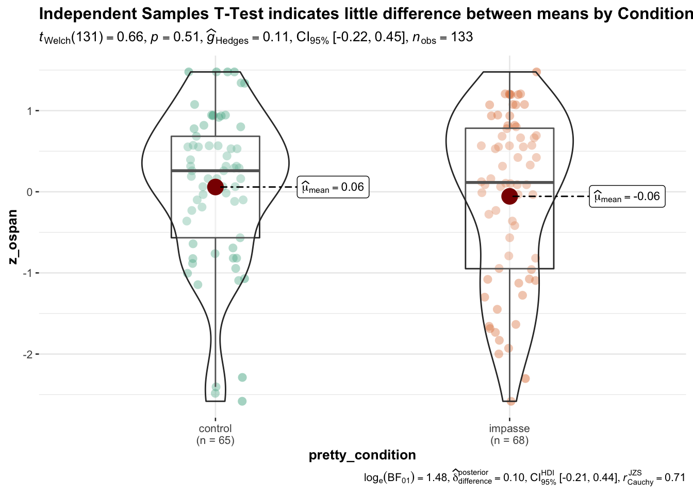
CODE
#PROPORTIONAL BAR CHART OF MED SPLIT BY CONDITIONggbarstats( x = pretty_condition, y = ospan_split, data = df_s) +labs(title ="The Proportion of high (vs) low WM scores by does appear to differ by condition")
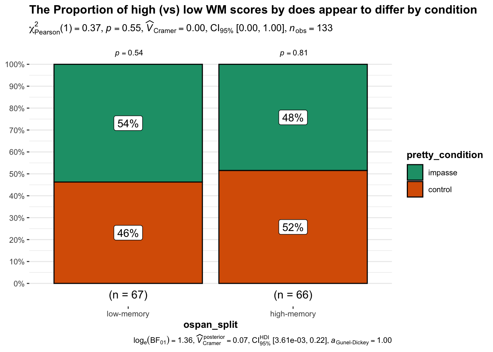
As we would expect, there is not a meaningful difference between the means (or shape of distribution) of the outcome weighted OSPAN by condition, nor between the proportions of high (vs) low scores after taking a median split of the weighted OSPAN score.
OSPAN ~ Q1 Accuracy
Does the OSPAN score help explain variance in Q1 Accuracy?
CODE
#SETUP DATAdf_s = df_s #just for reference##STATSPLOTggstatsplot::grouped_ggbarstats(data = df_s, y = ospan_split, x = item_q1_NABS, grouping.var = pretty_condition,type ="nonparametric", equal.var =FALSE,annotation.args =list(title ="Potential INTERACTION between condition and WM Score"))
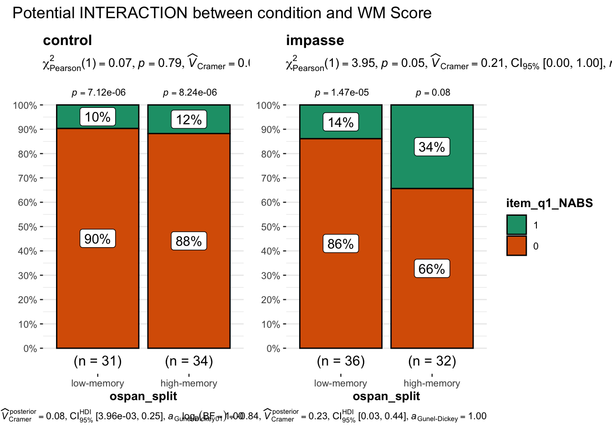
It appears as though there may be an interaction between WM score and CONDITION, such that in the control condition, participants perform equally well (or poorly, as the case may be), regardless of of WM score. In the impasse condition, readers with the impasse condition have a higher proportion of correct responses than readers with low WM scores. One possible explanation of these observations is that perhaps higher WM capacity enables readers to take advantage of the implicit scaffolding the impasse provides.
Statistical Tests
To explore the relationship between ACCURACY, CONDITION and OSPAN score, we can run two separate CHI square tests evaluating independence of condition and accuracy, one for each level of working memory (the groups are roughly equal due to the median split). If WM interacts with condition, we should expect to see one chi square indicate independence (low working memory) and one not (high working memory). Additionally, we can compute a Breslow-Day test for Homogeneity of Odds Ratios, to test the null hypothesis that the odds ratios for accuracy by condition do not differ across levels of working memory. ::: {.cell}
CODE
#IS ACCURACY INDEPENDENT OF CONDITION for low WM?paste("Accuracy independent of CONDITION for LOW WM?")
[1] "Accuracy independent of CONDITION for LOW WM?"
CODE
x <- df_s %>%filter(ospan_split =="low-memory")(t <-table(x$item_q1_NABS, x$condition))
111 121
0 28 31
1 3 5
CODE
# chisq.test(t)chiSquare(item_q1_NABS ~ condition, data = x)
Warning in chisq.test(x, y): Chi-squared approximation may be incorrect
Pearson Chi-square Tests Response variable:item_q1_NABS
chisquare df chisquare-df P n
condition 0.02 1 -0.98 0.879 67
CODE
# YES, IT IS (EXPECTED)#IS ACCURACY INDEPENDENT OF CONDITION for low WM?paste("Accuracy independent of CONDITION for HIGH WM?")
[1] "Accuracy independent of CONDITION for HIGH WM?"
CODE
x <- df_s %>%filter(ospan_split =="high-memory")(t <-table(x$item_q1_NABS, x$condition))
111 121
0 30 21
1 4 11
CODE
# chisq.test(t)chiSquare(item_q1_NABS ~ condition, data = x)
Pearson Chi-square Tests Response variable:item_q1_NABS
chisquare df chisquare-df P n
condition 3.6 1 2.6 0.0579 66
CODE
# YES, IT IS (EXPECTED)library(DescTools)
Registered S3 method overwritten by 'DescTools':
method from
reorder.factor gdata
Attaching package: 'DescTools'
The following object is masked from 'package:ggdist':
Mode
The following object is masked from 'package:mosaic':
MAD
The following object is masked from 'package:jtools':
%nin%
The following objects are masked from 'package:Hmisc':
%nin%, Label, Mean, Quantile
CODE
#Calculates the Breslow-Day test of homogeneity for a 2 \times 2 \times k2×2×k table, in order to investigate if all #kk strata have the same OR. If OR is not given, the Mantel-Haenszel estimate is used.t <-table(df_s$item_q1_NABS, df_s$ospan_split, df_s$condition)BreslowDayTest(t, OR =1)
Breslow-Day test on Homogeneity of Odds Ratios
data: t
X-squared = 4, df = 1, p-value = 0.04
:::
_A Brewslow-Day Test of homogeneity of Odds Ratios allows us to test the null hypothesis that the odds for each response outcome (correct, incorrect) are the same for each condition across each level of working memory. Essentially, that the odds ratio of a positive response for each condition does not differ by working memory. The significant p-value for this test allows us to reject this null hypothesis and conclude we have evidence that working memory score changes the odds ratio of a correct vs incorrect response across conditions.
#DATASETUPdf <- df_i %>%filter(q==1) %>%mutate(accuracy =as.factor(score_niceABS),l_condition =fct_relevel(condition, "121"),l_split =fct_relevel(ospan_split, "high-memory"))#:::::::: FIT MODELS#fit empty modelm.0<-glm( accuracy ~1, data = df, family ="binomial")# summary(m.0)#fit condition as predictor m.c <-glm( accuracy ~ pretty_condition, data = df, family ="binomial")#summary(m.c)#is condition better than empty model?print("Is Condition model better than empty model?")
[1] "Is Condition model better than empty model?"
CODE
print("Expect YES")
[1] "Expect YES"
CODE
test_lrt(m.0, m.c)
# Likelihood-Ratio-Test (LRT) for Model Comparison (ML-estimator)
Name | Model | df | df_diff | Chi2 | p
------------------------------------------
m.0 | glm | 1 | | |
m.c | glm | 2 | 1 | 3.88 | 0.049
CODE
#fit OSPAN as predictor m.o <-glm( accuracy ~ ospan_split, data = df, family ="binomial")#summary(m.o)#is ospan better than empty model?print("Is OSPAN model better than empty model?")
[1] "Is OSPAN model better than empty model?"
CODE
print("Expect NO")
[1] "Expect NO"
CODE
test_lrt(m.0, m.o)
# Likelihood-Ratio-Test (LRT) for Model Comparison (ML-estimator)
Name | Model | df | df_diff | Chi2 | p
------------------------------------------
m.0 | glm | 1 | | |
m.o | glm | 2 | 1 | 2.74 | 0.098
CODE
# fit condition AND OSPAN MAIN EFFECTSm.co <-glm( accuracy ~ pretty_condition + ospan_split, data = df, family ="binomial")summary(m.co)
Call:
glm(formula = accuracy ~ pretty_condition + ospan_split, family = "binomial",
data = df)
Deviance Residuals:
Min 1Q Median 3Q Max
-0.870 -0.599 -0.559 -0.373 2.323
Coefficients:
Estimate Std. Error z value Pr(>|z|)
(Intercept) -2.629 0.523 -5.03 5e-07 ***
pretty_conditionimpasse 1.002 0.499 2.01 0.045 *
ospan_splithigh-memory 0.851 0.487 1.75 0.081 .
---
Signif. codes: 0 '***' 0.001 '**' 0.01 '*' 0.05 '.' 0.1 ' ' 1
(Dispersion parameter for binomial family taken to be 1)
Null deviance: 122.49 on 132 degrees of freedom
Residual deviance: 115.42 on 130 degrees of freedom
AIC: 121.4
Number of Fisher Scoring iterations: 4
CODE
# car::Anova(m.cw)#is CONDITION + OSPAN better than CONDITION model?print("Is CONDITION + OSPAN model better than CONDITION model?")
[1] "Is CONDITION + OSPAN model better than CONDITION model?"
CODE
print("Expect NO")
[1] "Expect NO"
CODE
test_lrt(m.c, m.co)
# Likelihood-Ratio-Test (LRT) for Model Comparison (ML-estimator)
Name | Model | df | df_diff | Chi2 | p
------------------------------------------
m.c | glm | 2 | | |
m.co | glm | 3 | 1 | 3.19 | 0.074
CODE
# fit condition AND OSPAN with INTERACTION m.cio <-glm( accuracy ~ pretty_condition:ospan_split + pretty_condition + ospan_split , data = df, family ="binomial")# summary(m.cio)# car::Anova(m.ciw)#is CONDITION + OSPAN IXN better than CONDITION model?print("Is CONDITION + OSPAN IXN model better than CONDITION model?")
[1] "Is CONDITION + OSPAN IXN model better than CONDITION model?"
CODE
print("Expect YES")
[1] "Expect YES"
CODE
test_lrt(m.cio, m.c)
# Likelihood-Ratio-Test (LRT) for Model Comparison (ML-estimator)
Name | Model | df | df_diff | Chi2 | p
-------------------------------------------
m.cio | glm | 4 | | |
m.c | glm | 2 | -2 | 4.08 | 0.130
CODE
# MANUAL ONE-SIDED SIGTEST ::::::::::::::::::::::::::: # one-sided (right tail) z test for B COEFFICIENT#https://stats.stackexchange.com/questions/330655/strategy-for-a-one-sided-test-of-glms-coefficients#SANITY CHECK 2-tailed test should match the model output# tt <- 2*pnorm(m.3$coefficients, lower.tail = F)# paste("p value for two-tailed test, null B = 0 : ",round(tt,3))# ot <- pnorm(m.3$coefficients, lower.tail = F)# paste("BUT we want a one tailed directional, null: B <= 0: ",round(ot,3))# paste("adjusted confint for directional hypothesis")# (dcint <- confint(m1, level = 0.90)) # get 90% for right side))# # https://stats.stackexchange.com/questions/20734/is-a-1-sided-90-prediction-interval-equivalent-to-a-2-sided-95-prediction-inte
Describe
CODE
summary(m.cio)
Call:
glm(formula = accuracy ~ pretty_condition:ospan_split + pretty_condition +
ospan_split, family = "binomial", data = df)
Deviance Residuals:
Min 1Q Median 3Q Max
-0.918 -0.547 -0.500 -0.451 2.161
Coefficients:
Estimate Std. Error z value
(Intercept) -2.234 0.607 -3.68
pretty_conditionimpasse 0.409 0.775 0.53
ospan_splithigh-memory 0.219 0.808 0.27
pretty_conditionimpasse:ospan_splithigh-memory 0.959 1.011 0.95
Pr(>|z|)
(Intercept) 0.00024 ***
pretty_conditionimpasse 0.59782
ospan_splithigh-memory 0.78656
pretty_conditionimpasse:ospan_splithigh-memory 0.34295
---
Signif. codes: 0 '***' 0.001 '**' 0.01 '*' 0.05 '.' 0.1 ' ' 1
(Dispersion parameter for binomial family taken to be 1)
Null deviance: 122.49 on 132 degrees of freedom
Residual deviance: 114.54 on 129 degrees of freedom
AIC: 122.5
Number of Fisher Scoring iterations: 4
Significant main effect condition, non significant main effect of OSPAN, non significant interaction.
Although we can see (ref plots below) that high_working memory participants were more likely to correctly answer Q1, the difference in proportions for this sample size (~30 per cell in the 2x2 contingency table of condition X OSPAN score) failed to reach statistical significance at the 0.05 alpha level.
Does the OSPAN score help explain variance in Q1 interpetation?
CODE
##STATSPLOTggstatsplot::grouped_ggbarstats(data = df_s, y = ospan_split, x = item_q1_state, grouping.var = pretty_condition,type ="nonparametric", equal.var =FALSE,annotation.args =list(title ="Potential INTERACTION between condition and WM Score"))
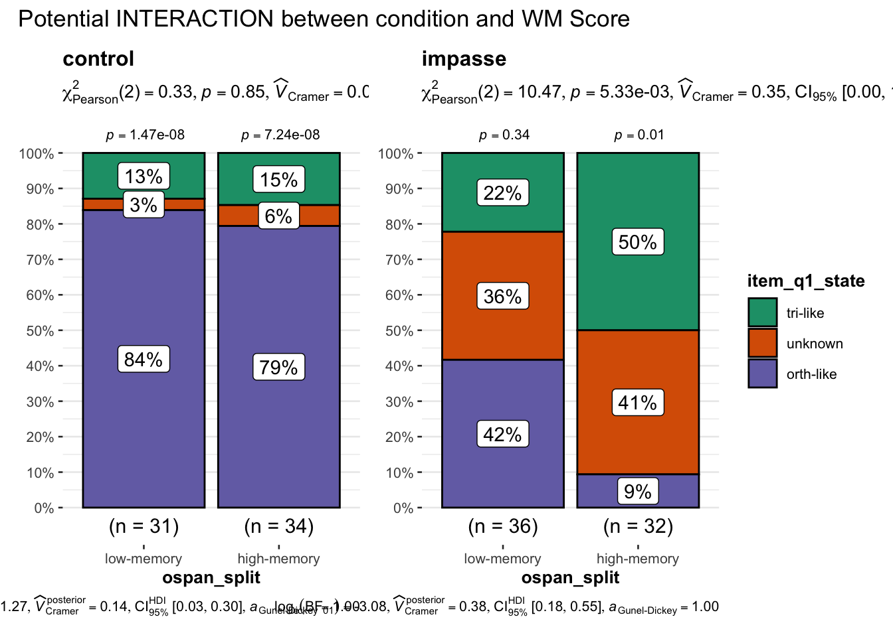
Again we see a potential interaction between WM score and CONDITION looking at the interpretation indicated by responses on the first question. In the control condition, low and high working memory participants offered very similar proportions of each type of interpretation (with the high working memory subjects offering slightly more unknown and tri-like interpretations). Alternatively in the impasse condition, high working memory Ss have substantially fewer orthogonal interpretations, with far more triangular and unknown interpretations.
Statistical Tests
To explore the relationship between INTERPREATION STATE, CONDITION and OSPAN score, we can run two separate CHI square tests evaluating independence of condition and interpretation, one for each level of working memory (the groups are roughly equal due to the median split). If WM interacts with condition, we should expect to see one chi square indicate independence (low working memory) and one not (high working memory). Additionally, we can compute a Breslow-Day test for Homogeneity of Odds Ratios, to test the null hypothesis that the odds ratios for accuracy by condition do not differ across levels of working memory. ::: {.cell}
CODE
#IS INTERPRETATION STATE INDEPENDENT OF CONDITION for low WM?paste("Accuracy independent of CONDITION for LOW WM?")
[1] "Accuracy independent of CONDITION for LOW WM?"
CODE
x <- df_s %>%filter(ospan_split =="low-memory")(t <-table(x$item_q1_state, x$condition))
111 121
orth-like 26 15
unknown 1 13
tri-like 4 8
CODE
# chisq.test(t)chiSquare(item_q1_state ~ condition, data = x)
Pearson Chi-square Tests Response variable:item_q1_state
chisquare df chisquare-df P n
condition 14.3 2 12.3 0.0008 67
CODE
# NOT expected#IS ACCURACY INDEPENDENT OF CONDITION for HIGH WM?paste("Accuracy independent of CONDITION for HIGH WM?")
[1] "Accuracy independent of CONDITION for HIGH WM?"
CODE
x <- df_s %>%filter(ospan_split =="high-memory")(t <-table(x$item_q1_state, x$condition))
111 121
orth-like 27 3
unknown 2 13
tri-like 5 16
CODE
# chisq.test(t)chiSquare(item_q1_state ~ condition, data = x)
Pearson Chi-square Tests Response variable:item_q1_state
chisquare df chisquare-df P n
condition 33 2 31 0 66
CODE
# YES, IT IS (EXPECTED)library(DescTools)#Calculates the Breslow-Day test of homogeneity for a 2 \times 2 \times k2×2×k table, in order to investigate if all #kk strata have the same OR. If OR is not given, the Mantel-Haenszel estimate is used.t <-table(df_s$item_q1_state, df_s$ospan_split, df_s$condition)BreslowDayTest(t, OR =1)
Breslow-Day test on Homogeneity of Odds Ratios
data: t
X-squared = -56, df = 1, p-value = 1
:::
A Brewslow-Day Test of homogeneity of Odds Ratios allows us to test the null hypothesis that the odds for each response outcome (orth-like, unknown, tri-like) are the same for each condition across each level of working memory. Essentially, that the odds ratio of a positive response for each condition does not differ by working memory.
_We must reject the null hypothesis that (for low-working memory participants) condition and interpretation are independent. They do appear to be related, such that even for low-working memory participants, the impasse condition yields many more unknown and triangle-like responses than the control condition. Together with the non-significant p-value for that does not allow us to reject the null hypothesis of homogeneous odds ratios across levels of working memory score, we do not have evidence of an interaction between working memory score and INTERPRETATION on question 1.
#DATASETUPdf <- df_i %>%filter(q==1) %>%mutate(accuracy =as.factor(score_niceABS),l_condition =fct_relevel(condition, "121"),l_split =fct_relevel(ospan_split, "high-memory"))#:::::::: FIT MODELS#fit empty modelm.0<-glm( accuracy ~1, data = df, family ="binomial")# summary(m.0)#fit condition as predictor m.c <-glm( accuracy ~ pretty_condition, data = df, family ="binomial")#summary(m.c)#is condition better than empty model?print("Is Condition model better than empty model?")
[1] "Is Condition model better than empty model?"
CODE
print("Expect YES")
[1] "Expect YES"
CODE
test_lrt(m.0, m.c)
# Likelihood-Ratio-Test (LRT) for Model Comparison (ML-estimator)
Name | Model | df | df_diff | Chi2 | p
------------------------------------------
m.0 | glm | 1 | | |
m.c | glm | 2 | 1 | 3.88 | 0.049
CODE
#fit OSPAN as predictor m.o <-glm( accuracy ~ ospan_split, data = df, family ="binomial")#summary(m.o)#is ospan better than empty model?print("Is OSPAN model better than empty model?")
[1] "Is OSPAN model better than empty model?"
CODE
print("Expect NO")
[1] "Expect NO"
CODE
test_lrt(m.0, m.o)
# Likelihood-Ratio-Test (LRT) for Model Comparison (ML-estimator)
Name | Model | df | df_diff | Chi2 | p
------------------------------------------
m.0 | glm | 1 | | |
m.o | glm | 2 | 1 | 2.74 | 0.098
CODE
# fit condition AND OSPAN MAIN EFFECTSm.co <-glm( accuracy ~ pretty_condition + ospan_split, data = df, family ="binomial")summary(m.co)
Call:
glm(formula = accuracy ~ pretty_condition + ospan_split, family = "binomial",
data = df)
Deviance Residuals:
Min 1Q Median 3Q Max
-0.870 -0.599 -0.559 -0.373 2.323
Coefficients:
Estimate Std. Error z value Pr(>|z|)
(Intercept) -2.629 0.523 -5.03 5e-07 ***
pretty_conditionimpasse 1.002 0.499 2.01 0.045 *
ospan_splithigh-memory 0.851 0.487 1.75 0.081 .
---
Signif. codes: 0 '***' 0.001 '**' 0.01 '*' 0.05 '.' 0.1 ' ' 1
(Dispersion parameter for binomial family taken to be 1)
Null deviance: 122.49 on 132 degrees of freedom
Residual deviance: 115.42 on 130 degrees of freedom
AIC: 121.4
Number of Fisher Scoring iterations: 4
CODE
# car::Anova(m.cw)#is CONDITION + OSPAN better than CONDITION model?print("Is CONDITION + OSPAN model better than CONDITION model?")
[1] "Is CONDITION + OSPAN model better than CONDITION model?"
CODE
print("Expect NO")
[1] "Expect NO"
CODE
test_lrt(m.c, m.co)
# Likelihood-Ratio-Test (LRT) for Model Comparison (ML-estimator)
Name | Model | df | df_diff | Chi2 | p
------------------------------------------
m.c | glm | 2 | | |
m.co | glm | 3 | 1 | 3.19 | 0.074
CODE
# fit condition AND OSPAN with INTERACTION m.cio <-glm( accuracy ~ pretty_condition:ospan_split + pretty_condition + ospan_split , data = df, family ="binomial")# summary(m.cio)# car::Anova(m.ciw)#is CONDITION + OSPAN IXN better than CONDITION model?print("Is CONDITION + OSPAN IXN model better than CONDITION model?")
[1] "Is CONDITION + OSPAN IXN model better than CONDITION model?"
CODE
print("Expect YES")
[1] "Expect YES"
CODE
test_lrt(m.cio, m.c)
# Likelihood-Ratio-Test (LRT) for Model Comparison (ML-estimator)
Name | Model | df | df_diff | Chi2 | p
-------------------------------------------
m.cio | glm | 4 | | |
m.c | glm | 2 | -2 | 4.08 | 0.130
CODE
# MANUAL ONE-SIDED SIGTEST ::::::::::::::::::::::::::: # one-sided (right tail) z test for B COEFFICIENT#https://stats.stackexchange.com/questions/330655/strategy-for-a-one-sided-test-of-glms-coefficients#SANITY CHECK 2-tailed test should match the model output# tt <- 2*pnorm(m.3$coefficients, lower.tail = F)# paste("p value for two-tailed test, null B = 0 : ",round(tt,3))# ot <- pnorm(m.3$coefficients, lower.tail = F)# paste("BUT we want a one tailed directional, null: B <= 0: ",round(ot,3))# paste("adjusted confint for directional hypothesis")# (dcint <- confint(m1, level = 0.90)) # get 90% for right side))# # https://stats.stackexchange.com/questions/20734/is-a-1-sided-90-prediction-interval-equivalent-to-a-2-sided-95-prediction-inte
Describe
CODE
summary(m.cio)
Call:
glm(formula = accuracy ~ pretty_condition:ospan_split + pretty_condition +
ospan_split, family = "binomial", data = df)
Deviance Residuals:
Min 1Q Median 3Q Max
-0.918 -0.547 -0.500 -0.451 2.161
Coefficients:
Estimate Std. Error z value
(Intercept) -2.234 0.607 -3.68
pretty_conditionimpasse 0.409 0.775 0.53
ospan_splithigh-memory 0.219 0.808 0.27
pretty_conditionimpasse:ospan_splithigh-memory 0.959 1.011 0.95
Pr(>|z|)
(Intercept) 0.00024 ***
pretty_conditionimpasse 0.59782
ospan_splithigh-memory 0.78656
pretty_conditionimpasse:ospan_splithigh-memory 0.34295
---
Signif. codes: 0 '***' 0.001 '**' 0.01 '*' 0.05 '.' 0.1 ' ' 1
(Dispersion parameter for binomial family taken to be 1)
Null deviance: 122.49 on 132 degrees of freedom
Residual deviance: 114.54 on 129 degrees of freedom
AIC: 122.5
Number of Fisher Scoring iterations: 4
Main effect of condition, no main effect of OSPAN and non significant interaction.
Although we can see (ref plots below) that high_working memory participants were more likely to correctly answer Q1, the difference in proportions for this sample size (~30 per cell in the 2x2 contingency table of condition X OSPAN score) failed to reach statistical significance at the 0.05 alpha level.
Does the OSPAN score help explain variance in test phase accuracy?
CODE
##SETUP DATAdf <- df_s##STATSPLOTggstatsplot::grouped_ggbetweenstats(data = df, y = item_test_NABS, x = ospan_split, grouping.var = pretty_condition,type ="nonparametric", equal.var =FALSE,annotation.args =list(title ="Potential INTERACTION between condition and WM Score"))
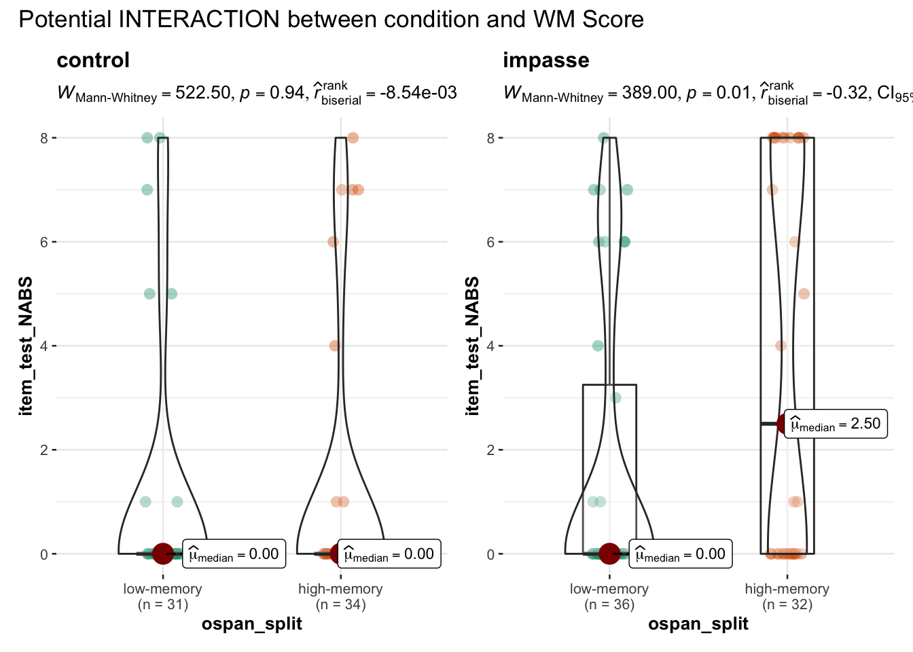
There appears to be an interaction between CONDITION and OSPAN score such that only participants with high working memory scores had better performance in the impasse condition. This could potential be driving the effect of the impasse condition.
Linear Regression
Fit Model
CODE
#PREP DATAdf_s <- df_s %>%mutate(c_acc =scale(item_test_NABS), #mean centered accuracy scoremed_acc =scale(item_test_NABS, center =median(item_test_NABS), scale = F))#:::::::: FIT MODELS#empty modelm.0<-lm( data = df_s, item_test_NABS ~1)# summ(m.0)#condition predictorm.c <-lm( data = df_s, item_test_NABS ~ pretty_condition)#summ(m.c)paste("Condition predictor improves fit?")
[1] "Condition predictor improves fit?"
CODE
test_lrt(m.c, m.0)
# Likelihood-Ratio-Test (LRT) for Model Comparison (OLS-estimator)
Name | Model | df | df_diff | Chi2 | p
------------------------------------------
m.c | lm | 3 | | |
m.0 | lm | 2 | -1 | 8.27 | 0.004
\(\beta_0\) intercept is MEAN when both predictors are at reference: (control condition low memory) [M = 1.129] \(\beta_{1impasse}\) intercept is DIFFERENCE to (IMPASSE condition low memory) [M 1.72 - 1.129 = 0.591] \(\beta_{1high}\) intercept is DIFFERENCE to (CONTROL condition HIGH memory) [M 1.21 - 1.129 = 0.079] \(\beta_{1 impasse : high}\) is DIFFERENCE to ?? no idea can’t figure this one out. its not to reference levels
BUT don’t fret re: significance of predictors in the model, rather, to see if effects are significant, just run anova on the model.
Visualize
By comparing the average performance by condition … ::: {.cell}
CODE
#PLOT EFFECTSplot_model(m.c, type ="pred")
$pretty_condition
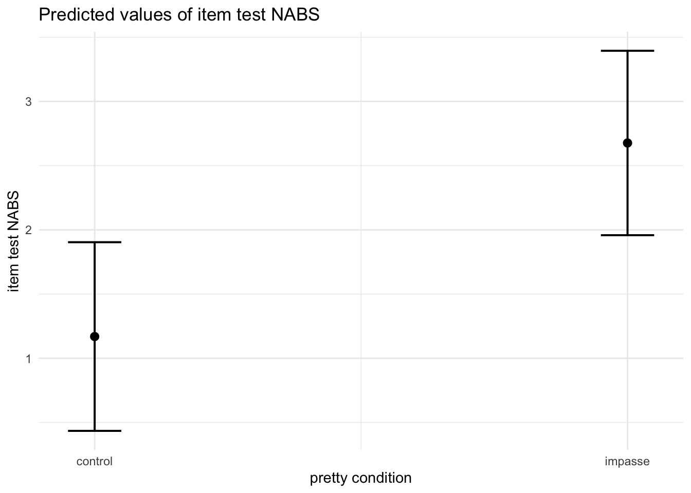
CODE
#TODO GET + ylim(0,8) to work
:::
…to the average by condition broken out by working memory, we see that perhaps working memory score drives some of the effect of improved performance in the impasse condition.
CODE
plot_model(m.cio, type ="int")
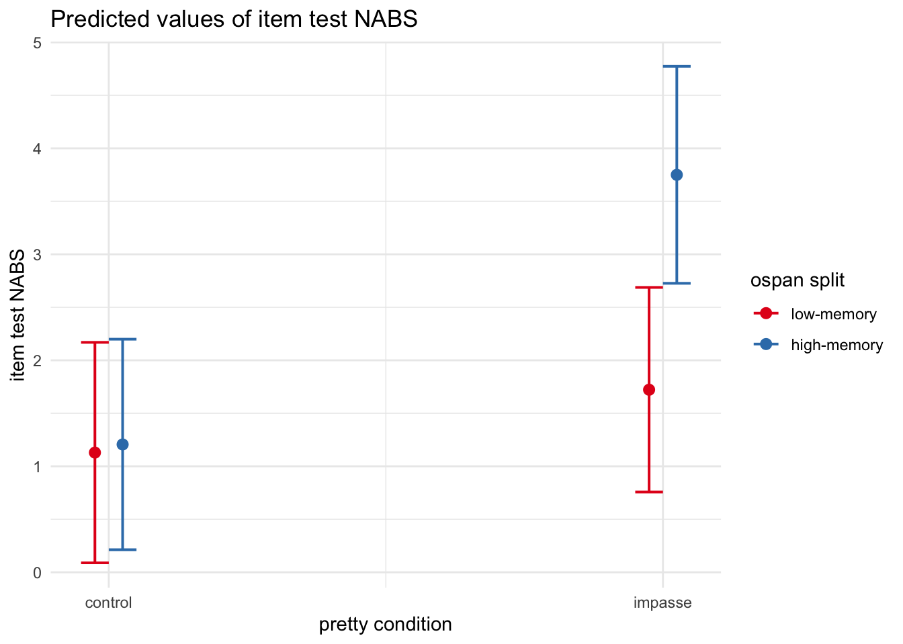
CODE
#+ ylim(0,8)
Diagnostics
CODE
#PERFORMANCEperformance(m.cio)
# Indices of model performance
AIC | BIC | R2 | R2 (adj.) | RMSE | Sigma
-----------------------------------------------------
671.567 | 686.019 | 0.114 | 0.094 | 2.910 | 2.955
## 1 | SETUP RANDOM INTERCEPT SUBJECT#:: EMPTY MODEL (baseline, no random effect)print("Empty fixed model")
[1] "Empty fixed model"
CODE
m0 =glm(accuracy ~1, family ="binomial", data = df_i) # summary(m0)#:: RANDOM INTERCEPT SUBJECTprint("Subject intercept random model")
[1] "Subject intercept random model"
CODE
mm.rS <-glmer(accuracy ~ (1|subject), data = df_i, family ="binomial",control=glmerControl(optimizer="bobyqa",optCtrl=list(maxfun=100000)))# summary(mm.rS)# :: TEST random effectpaste("AIC decreases w/ new model?", m0$aic >AIC(logLik(mm.rS)))
[1] "AIC decreases w/ new model? TRUE"
CODE
test_lrt(m0,mm.rS) #same as anova(m0, m1, test = "Chi")
# Likelihood-Ratio-Test (LRT) for Model Comparison (ML-estimator)
Name | Model | df | df_diff | Chi2 | p
-------------------------------------------------
m0 | glm | 1 | | |
mm.rS | glmerMod | 2 | 1 | 996.89 | < .001
CODE
paste("Likelihood Ratio test is significant? p = ",(test_lrt(m0,mm.rS))$p[2])
[1] "Likelihood Ratio test is significant? p = 8.51171579630337e-219"
CODE
## 2 | ADD RANDOM INTERCEPT ITEM?#:: RANDOM INTERCEPT SUBJECT + INTERCEPT Q# print("Subject & Question random intercepts")# mm.rSQ <- glmer(accuracy ~ (1|subject) + (1|q), data = df_i, family = "binomial")# # summary(mm.rSQ)# # # :: TEST random effect# paste("AIC decreases w/ new model?", AIC(logLik(mm.rS)) > AIC(logLik(mm.rSQ)) )# test_lrt(mm.rS,mm.rSQ) #same as anova(m0, m1, test = "Chi")# paste("Likelihood Ratio test is significant? p = ",(test_lrt(mm.rS,mm.rSQ))$p[2])## 3 | ADD FIXED EFFECT CONDITION# print("FIXED Condition + Subject & Question random intercepts")# mm.CrSQ <- glmer(accuracy ~ pretty_condition + (1|subject) + (1|q), # data = df_i, family = "binomial")# summary(mm.CrSQ)# # paste("AIC decreases w/ new model", AIC(logLik(mm.rSQ)) > AIC(logLik(mm.CrSQ)) )# test_lrt(mm.rSQ,mm.CrSQ) #same as anova(m0, m1, test = "Chi")# paste("Likelihood Ratio test is significant? p = ",(test_lrt(mm.rSQ,mm.CrSQ))$p[2])print("FIXED Condition + Subject random intercepts")
[1] "FIXED Condition + Subject random intercepts"
CODE
mm.CrS <-glmer(accuracy ~ pretty_condition + (1|subject) ,data = df_i, family ="binomial")# summary(mm.CrS)paste("AIC decreases w/ new model", AIC(logLik(mm.rS)) >AIC(logLik(mm.CrS)) )
[1] "AIC decreases w/ new model TRUE"
CODE
test_lrt(mm.rS,mm.CrS) #same as anova(m0, m1, test = "Chi")
# Likelihood-Ratio-Test (LRT) for Model Comparison (ML-estimator)
Name | Model | df | df_diff | Chi2 | p
-------------------------------------------------
mm.rS | glmerMod | 2 | | |
mm.CrS | glmerMod | 3 | 1 | 15.16 | < .001
CODE
paste("Likelihood Ratio test is significant? p = ",(test_lrt(mm.rS,mm.CrS))$p[2])
[1] "Likelihood Ratio test is significant? p = 0.0000989108940029305"
CODE
## 4 | ADD FIXED EFFECT OSPAN only print("FIXED OSPAN + Subject random intercepts")
[1] "FIXED OSPAN + Subject random intercepts"
CODE
mm.OrS <-glmer(accuracy ~ ospan + (1|subject) ,data = df_i, family ="binomial")# summary(mm.OrS)paste("OSPAN decreases AIC over random?", AIC(logLik(mm.rS)) >AIC(logLik(mm.OrS)) )
[1] "OSPAN decreases AIC over random? TRUE"
CODE
test_lrt(mm.rS,mm.OrS) #same as anova(m0, m1, test = "Chi")
# Likelihood-Ratio-Test (LRT) for Model Comparison (ML-estimator)
Name | Model | df | df_diff | Chi2 | p
-----------------------------------------------
mm.rS | glmerMod | 2 | | |
mm.OrS | glmerMod | 3 | 1 | 2.01 | 0.156
CODE
paste("Likelihood Ratio test is significant? p = ",(test_lrt(mm.rS,mm.OrS))$p[2])
[1] "Likelihood Ratio test is significant? p = 0.155998034743899"
CODE
## 5 | MODEL OF INTEREST! OSPAN + CONDITION + sujectprint("FIXED OSPAN + CONDITION + IXN + Subject random intercepts")
#:::::::: MANUAL ONE-SIDED SIGTEST # one-sided (right tail) z test for B COEFFICIENT#SANITY CHECK 2-tailed test should match the model output# tt <- 2*pnorm(summary(m1)$coefficients[2,3], lower.tail = F)# paste("p value for two-tailed test, null B = 0 : ",round(tt,5))# ot <- pnorm(summary(m1)$coefficients[2,3], lower.tail = F)# paste("BUT we want a one tailed directional, null: B <= 0: ",round(ot,5))#:::::::: INTERPRET COEFFICIENTSse <-sqrt(diag(stats::vcov(m1)))# table of estimates with 95% CIpaste("LOG ODDS")
[1] "LOG ODDS"
CODE
(tab <-cbind(Est =fixef(m1), LL =fixef(m1) -1.96* se, UL =fixef(m1) +1.96* se))
Est LL UL
(Intercept) -5.345 -7.502 -3.19
pretty_conditionimpasse 1.514 -1.026 4.05
ospanhigh-memory -0.724 -3.131 1.68
pretty_conditionimpasse:ospanhigh-memory 4.203 0.574 7.83
CODE
paste("ODDS RATIOS")
[1] "ODDS RATIOS"
CODE
(e <-exp(tab))
Est LL UL
(Intercept) 0.00477 0.000552 0.0412
pretty_conditionimpasse 4.54669 0.358441 57.6732
ospanhigh-memory 0.48505 0.043653 5.3895
pretty_conditionimpasse:ospanhigh-memory 66.87469 1.776070 2518.0447
Inference
TODO
Visualize
CODE
#:::::::: PLOT#GGSTATS | MODEL | LOG ODDS ggcoefstats(m1, output ="plot", conf.level =0.90) +labs(x ="Log Odds Estimate", subtitle ="p is for two tailed test")
#SJPLOT | MODEL | ODDS RATIO#library(sjPlot)plot_model(m1, vline.color ="red", show.intercept =TRUE, show.values =TRUE,p.threshold =0.1, #manually adjust to account for directional testci.lvl =0.90 ) +#manually adjusted for directional test labs(title ="Model Predicted Odds Ratio",subtitle ="",x ="Condition")
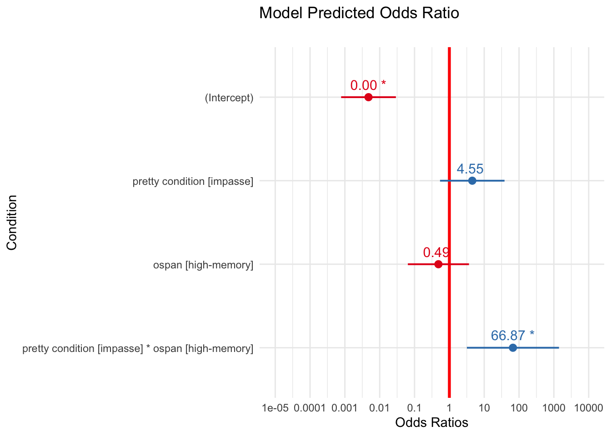
CODE
#SJPLOT | MODEL | PROBABILITIESplot_model(m1, type="int",show.intercept =TRUE,show.values =TRUE,title ="Model Predicted Probability of Accuracy",axis.title =c("Condition","Probability of Accurate Response"))
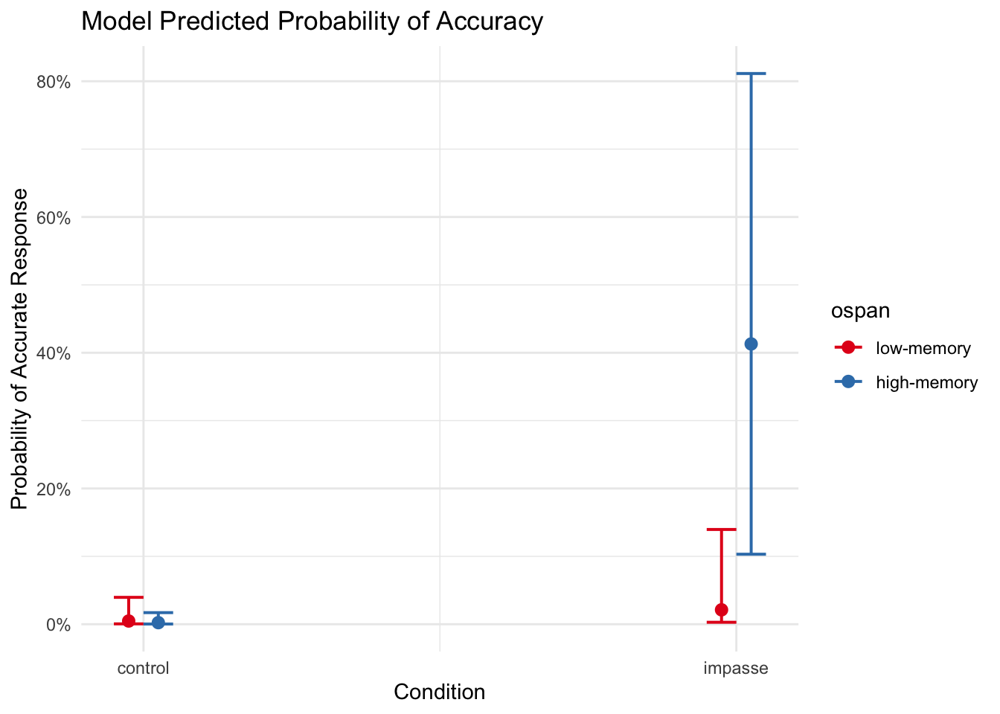
CODE
#SJPLOT | MODEL | TABLE#tab_model(m1)
Narrative
By comparing the average performance by condition … ::: {.cell}
CODE
#PLOT EFFECTSplot_model(mm.CrS, type ="pred")
$pretty_condition
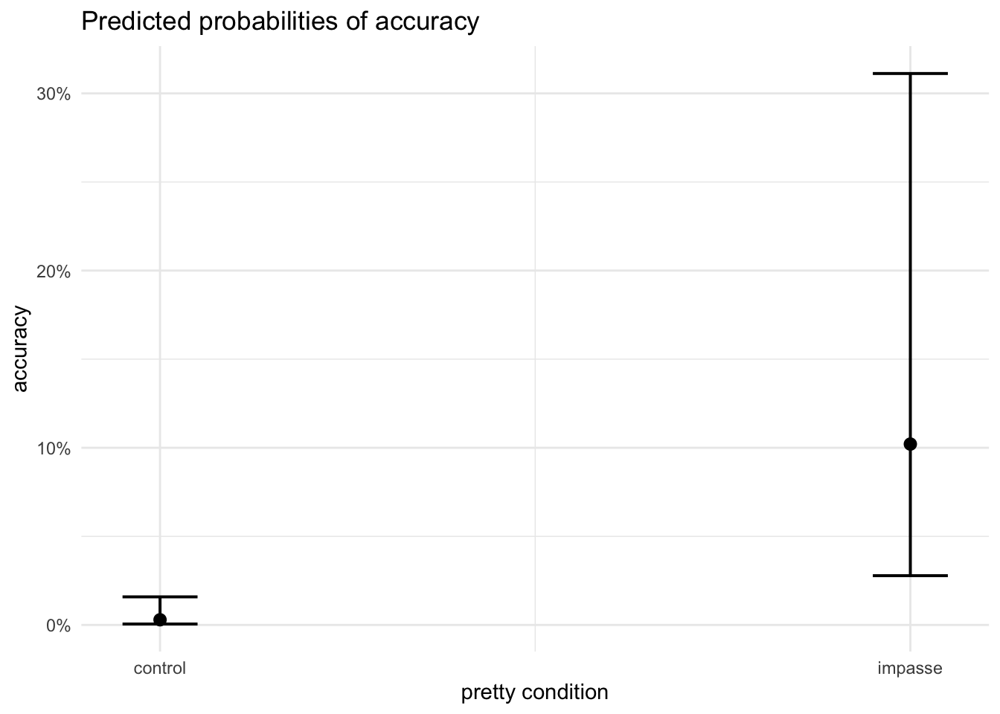
CODE
#TODO GET + ylim(0,8) to work
:::
…to the average by condition broken out by working memory, we see that perhaps working memory score drives some of the effect of improved performance in the impasse condition.
CODE
plot_model(mm.CIOrS, type ="int")
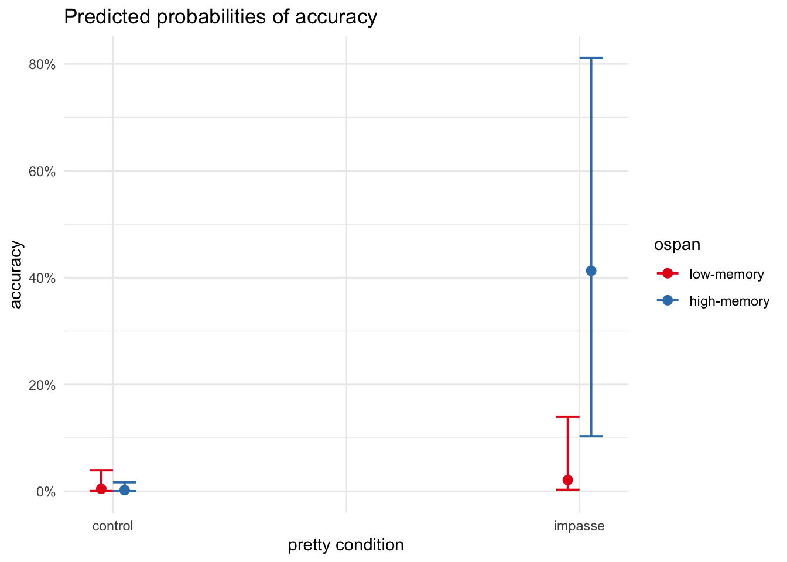
CODE
#+ ylim(0,8)
It is compelling to see that only high_working memory participants achieved the high probabilites of correct response in impasse.
Diagnostics
CODE
print("SANITY CHECK REPORTING")
[1] "SANITY CHECK REPORTING"
CODE
report(m1)
We fitted a logistic mixed model (estimated using ML and Nelder-Mead optimizer) to predict accuracy with pretty_condition and ospan (formula: accuracy ~ pretty_condition + ospan + pretty_condition:ospan). The model included subject as random effect (formula: ~1 | subject). The model's total explanatory power is substantial (conditional R2 = 0.89) and the part related to the fixed effects alone (marginal R2) is of 0.16. The model's intercept, corresponding to pretty_condition = control and ospan = low-memory, is at -5.35 (95% CI [-7.50, -3.19], p < .001). Within this model:
- The effect of pretty condition [impasse] is statistically non-significant and positive (beta = 1.51, 95% CI [-1.03, 4.05], p = 0.243; Std. beta = 1.51, 95% CI [-1.03, 4.05])
- The effect of ospan [high-memory] is statistically non-significant and negative (beta = -0.72, 95% CI [-3.13, 1.68], p = 0.556; Std. beta = -0.72, 95% CI [-3.13, 1.68])
- The interaction effect of ospan [high-memory] on pretty condition [impasse] is statistically significant and positive (beta = 4.20, 95% CI [0.57, 7.83], p = 0.023; Std. beta = 4.20, 95% CI [0.57, 7.83])
Standardized parameters were obtained by fitting the model on a standardized version of the dataset. 95% Confidence Intervals (CIs) and p-values were computed using the Wald approximation.
#evaluate model using kfold CV# https://www.statology.org/k-fold-cross-validation-in-r/# #specify the cross-validation method# ctrl <- trainControl(method = "cv", number = 5)# #fit a regression model and use k-fold CV to evaluate performance# mk <- train( accuracy ~ condition, data = df, method = "glm", trControl = ctrl, family = "binomial")# print(mk)#
Mass Movement
“movement of mass” from one mode to another
Considering only families of unimodal distributions, the most probably distribution (as predicted by package performance) is negative-binomial.
OLS Linear Regression on Q1 response time shows that condition explains a small but statistically significant amount of variance (impasse > control). However, the model violates the assumption of normally distributed residuals.
(Online Replication)
Visualization
CODE
# # df_online <- df_subjects %>% filter(mode == "asynch")# # #HISTOGRAM# stats = df_online %>% group_by(pretty_condition) %>% dplyr::summarise(mean = mean(item_q1_rt))# gf_dhistogram(~log(item_q1_rt), fill = ~pretty_condition, data = df_lab) %>% gf_facet_grid(~pretty_condition) +# # gf_vline(data = stats, xintercept = ~mean, color = "red") +# labs(title = "(ONLINE) First Question Response Time",# # x = "Response Time (seconds)",# # y = "proportion of participants",# subtitle = "") + # theme_minimal()
Model
CODE
# #SCORE predicted by CONDITION# rep.q1t.lm1 <- lm(log(item_q1_rt) ~ pretty_condition, data = df_online)# paste("Model")# summary(rep.q1t.lm1)# paste("Partition Variance")# anova(rep.q1t.lm1)# paste("Confidence Interval on Parameter Estimates")# confint(rep.q1t.lm1)# report(rep.q1t.lm1) #sanity check# #print model equation# eq <- extract_eq(rep.q1t.lm1, use_coefs = TRUE)
CODE
#MODEL ESTIMATES WITH UNCERTAINTY# # #setup references # # rep.q1t.lm1 <- lm(log(item_q1_rt) ~ condition, data = df_online)# m <- rep.q1t.lm1# df <- df_online # call <- m$call %>% as.character()# # # uncertainty model visualization# df <- df %>%# data_grid(pretty_condition) %>%# augment(m, newdata = ., se_fit = TRUE) # # #transform log# df$.fitted <- exp(df$.fitted)# df$.se.fit <- exp(df$.se.fit)# # df %>% # ggplot(aes(y = pretty_condition, color = pretty_condition)) +# stat_halfeye( scale = .5,# aes(# xdist = dist_student_t(df = df.residual(m), mu = .fitted, sigma = .se.fit),# fill = stat(cut_cdf_qi(cdf, # .width = c(.90, .95),# labels = scales::percent_format())))) +# scale_fill_brewer(direction = -1) + # labs (title = "(ONLINE) Q1 Response Latency ~ Condition", # x = "model predicted mean (seconds)", y = "Condition", fill = "Interval",# subtitle = paste("lm(",call[2],")"),# caption = "note: model log(predictions) have exponentiated to original scale") + theme(legend.position = "blank")
OLS Linear Regression on Q1 response time shows that condition explains a small but statistically significant amount of variance (impasse > control). However, the model violates the assumption of normally distributed residuals.
TODO RESPONSE CONSISTENCY
Source Code
---subtitle: 'Study SGC3A | 5 Exploratory Analyses'---\newpage# Exploratory Analyses {#sec-SGC3A-exploration}**TODO**\- response consistency - clarify core questions being asked\- review models already created in ARCHIVE?\- explore response consistency - fix references- what predicts consistency?- consider zero inflated / hurdles with ospan score as preditor*The purpose of this notebook is exploratory analyses of data collected for study SGC3A.*```{r}#| label: SETUP#| warning : false#| message : false#misc utilitieslibrary(Hmisc) # %nin% operatorlibrary(broom)library(modelr)library(distributional)library(jtools)library(pwr) #power analysislibrary(mosaic) #favstats#visualizationlibrary(ggpubr) #arrange plotslibrary(cowplot) #arrange shift function plotslibrary(ggformula) #easy graphslibrary(vcd) #mosaic plotslibrary(vcdExtra) #mosaic plotslibrary(kableExtra) #printing tables library(sjPlot) #visualize model coefficientslibrary(ggdist) #uncertainty viz library(ggstatsplot) #plots with stats#models and performancelibrary(report) #easystats reportinglibrary(see) #easystats visualizationlibrary(performance) #easystats model diagnosticslibrary(qqplotr) #confint on qq plotlibrary(gmodels) #contingency table and CHISQRlibrary(equatiomatic) #extract model equationlibrary(pscl) #zeroinfl / hurdle models library(lme4) #mixed effects models library(lmerTest) #for CIs in glmer library(ggeffects) #visualization log regr modelslibrary(nnet) #multinomial logistic regression [not mixed]library(mclogit) #frequentist mixed multinomial logistic regression [mblogit]library(brms) #bayesian mixed multinomials [+ other bayesian reg models]library(tidyverse) #ALL THE THINGS#OUTPUT OPTIONSlibrary(dplyr, warn.conflicts =FALSE)options(dplyr.summarise.inform =FALSE)options(ggplot2.summarise.inform =FALSE)options(scipen=1, digits=3)#GRAPH THEMEINGtheme_set(theme_minimal()) ``````{r}#| label: IMPORT-DATA#| warning : false#| message : false#IMPORT DATA df_items <-read_rds('analysis/SGC3A/data/2-scored-data/sgc3a_scored_items.rds')df_subjects <-read_rds('analysis/SGC3A/data/2-scored-data/sgc3a_scored_participants.rds')#weird... doesn't respect project level execute dir in yml unless included in index; otherwise breaks render```Exploratory QuestionsConsistency \| How consistent are learners in their interpretation of the graph? Do they adopt an interpretation on the first question and hold constant? Or do they change interpretations from question to question? Are there any interpretations that serve as 'absorbing states' (i.e. once encountered, the learner does not exist this state).Time Course of Exploration \| What is the relationship between response accuracy (and interpretation) and time spent on each item?Can exploration strategies be derived from mouse cursor activity?- does response time predict interpretation vs. non interpretation?TODO: - does impasse yield different exploration behavior? (characterize mouse) - does impasse yield more time on task? (characterize response time ? number of answers then de-selected?)TODO: Think about characterizing how variable the interpretations are across a participant. Do they form an interpretation and hold it constant? Or do they change question to question.## WORKING MEMORY During the 2021-2022 online replication study, participants completed a working memory task —the OSPAN task- after completing the SGC3A study. We added this task to explore possible sources of variance between individuals on the graph comprehension task. **Here we address the question: Does working memory (as measured by the OSPAN task) help explain performance on the interval graph comprehension task?**_First we join the load data for the subset of SGC3A participants who completed the OSPAN task. Note that this is a slightly lower n than the online replication, as a couple of participants failed to finish the OSPAN task, and will be excluded from this analysis._```{r}#LOAD OSPAN PARTICIPANTSdf_ospan <-read_csv("analysis/SGC3A/data/1-study-level/sgc3a_ospan.csv") #not scoredsgc3a <-read_rds("analysis/SGC3A/data/2-scored-data/sgc3a_scored_participants.rds") #not scoredsgc3a_items <-read_rds("analysis/SGC3A/data/2-scored-data/sgc3a_scored_items.rds") #not scored##ADD OSPAN DATA TO SUBJECT LEVEL DATA#select needed ospan columnsdf_ospan <- df_ospan %>%rename( OSPAN.weighted = weighted, OSPAN.math_acc = math_acc,OSPAN.order_acc = order_acc) %>% dplyr::select( subject, OSPAN.weighted, OSPAN.math_acc, OSPAN.order_acc) %>%mutate(z_ospan =zscore(OSPAN.weighted),ospan_split =as.factor(OSPAN.weighted >median(OSPAN.weighted)),ospan_split =recode_factor(ospan_split, "FALSE"="low-memory", "TRUE"="high-memory") )#get only the participants for whom we have ospan data df_sgc3a <- sgc3a %>%filter(subject %in% df_ospan$subject)#add q1 state field [3 category summary of interepretation]df_sgc3a <- df_sgc3a %>%mutate(item_q1_state =recode_factor(item_q1_SCALED, "-1"="orth-like","-0.5"="unknown","0"="unknown","0.5"="tri-like","1"="tri-like"),)#join the ospan columns to the scored sgc3a data df_sgc3a <-merge(df_sgc3a, df_ospan)##ADD OSPAN DATA TO ITEM LEVEL DATA#get only the participants for whom we have ospan data df_sgc3a_items <- sgc3a_items %>%filter(subject %in% df_ospan$subject) df_sgc3a_items <-merge(df_sgc3a_items, df_ospan)#define datasetdf_s <- df_sgc3adf_i <- df_sgc3a_items```_What is the distribution of performance on the OSPAN task?_```{r}#| label: DESC-SUBJ-OSPANtitle ="Descriptive Statistics of OSPAN Task Accuracy"ospan.stats <-rbind("MATH"= df_s %>% dplyr::select(OSPAN.math_acc) %>%unlist() %>%favstats(),"ORDER"= df_s %>% dplyr::select(OSPAN.order_acc) %>%unlist() %>%favstats(),"WEIGHTED"= df_s %>% dplyr::select(OSPAN.weighted) %>%unlist() %>%favstats())ospan.stats %>%kbl (caption = title) %>%kable_classic() %>%footnote(general ="MATH = %correct of all math questions; ORDER = % correct of OSPAN ordering (out of 30); WEIGHTED = math*ospan number correct", general_title ="Note: ",footnote_as_chunk = T)``````{r}#| label: VIS-SUBJ-OSPAN# #GGFORMULA | DENSITY HISTOGRAM gf_dhistogram(~z_ospan, data = df_s) +labs(x ="OSPAN (weighted) score",y ="% of subjects",title ="Distribution of OSPAN SCORE",subtitle ="")##GGPUBR | HIST+DENSITY SCORE BY CONDITION/MODEp <-gghistogram(df_s, x ="z_ospan", binwidth =0.5,add ="mean", rug =TRUE,fill ="pretty_condition", #, palette = c("#00AFBB", "#E7B800"),add_density =TRUE)facet(p, facet.by=c("pretty_condition")) +labs( title ="Distribution of OSPAN Score",subtitle ="The shape of the distribution of OSPAN scores is similar across conditions",x ="OSPAN (weighted) score", y ="number of subjects") +theme_minimal() +theme(legend.position ="blank")#GGSTATSggbetweenstats(y = z_ospan, x = pretty_condition, data = df_s,type ="parametric", var.equal =FALSE,title ="Independent Samples T-Test indicates little difference between means by Condition")#PROPORTIONAL BAR CHART OF MED SPLIT BY CONDITIONggbarstats( x = pretty_condition, y = ospan_split, data = df_s) +labs(title ="The Proportion of high (vs) low WM scores by does appear to differ by condition")```_As we would expect, there is not a meaningful difference between the means (or shape of distribution) of the outcome weighted OSPAN by condition, nor between the proportions of high (vs) low scores after taking a median split of the weighted OSPAN score._### OSPAN ~ Q1 Accuracy**Does the OSPAN score help explain variance in Q1 Accuracy?**```{r}#SETUP DATAdf_s = df_s #just for reference##STATSPLOTggstatsplot::grouped_ggbarstats(data = df_s, y = ospan_split, x = item_q1_NABS, grouping.var = pretty_condition,type ="nonparametric", equal.var =FALSE,annotation.args =list(title ="Potential INTERACTION between condition and WM Score"))```_It appears as though there may be an interaction between WM score and CONDITION, such that in the control condition, participants perform equally well (or poorly, as the case may be), regardless of of WM score. In the impasse condition, readers with the impasse condition have a higher proportion of correct responses than readers with low WM scores. One possible explanation of these observations is that perhaps higher WM capacity enables readers to take advantage of the implicit scaffolding the impasse provides._#### Statistical TestsTo explore the relationship between ACCURACY, CONDITION and OSPAN score, we can run two separate CHI square tests evaluating independence of condition and accuracy, one for each level of working memory (the groups are roughly equal due to the median split). If WM interacts with condition, we should expect to see one chi square indicate independence (low working memory) and one not (high working memory). Additionally, we can compute a Breslow-Day test for Homogeneity of Odds Ratios, to test the null hypothesis that the odds ratios for accuracy by condition do not differ across levels of working memory. ```{r}#IS ACCURACY INDEPENDENT OF CONDITION for low WM?paste("Accuracy independent of CONDITION for LOW WM?")x <- df_s %>%filter(ospan_split =="low-memory")(t <-table(x$item_q1_NABS, x$condition))# chisq.test(t)chiSquare(item_q1_NABS ~ condition, data = x)# YES, IT IS (EXPECTED)#IS ACCURACY INDEPENDENT OF CONDITION for low WM?paste("Accuracy independent of CONDITION for HIGH WM?")x <- df_s %>%filter(ospan_split =="high-memory")(t <-table(x$item_q1_NABS, x$condition))# chisq.test(t)chiSquare(item_q1_NABS ~ condition, data = x)# YES, IT IS (EXPECTED)library(DescTools)#Calculates the Breslow-Day test of homogeneity for a 2 \times 2 \times k2×2×k table, in order to investigate if all #kk strata have the same OR. If OR is not given, the Mantel-Haenszel estimate is used.t <-table(df_s$item_q1_NABS, df_s$ospan_split, df_s$condition)BreslowDayTest(t, OR =1)```_A Brewslow-Day Test of homogeneity of Odds Ratios allows us to test the null hypothesis that the odds for each response outcome (correct, incorrect) are the same for each condition across each level of working memory. Essentially, that the odds ratio of a positive response for each condition does not differ by working memory. The significant p-value for this test allows us to reject this null hypothesis and conclude we have evidence that working memory score changes the odds ratio of a correct vs incorrect response across conditions. #### Logistic Regression**Logistic Regression** Q1 Accuracy ~ Condition + OSPAN##### Fit Model```{r}#DATASETUPdf <- df_i %>%filter(q==1) %>%mutate(accuracy =as.factor(score_niceABS),l_condition =fct_relevel(condition, "121"),l_split =fct_relevel(ospan_split, "high-memory"))#:::::::: FIT MODELS#fit empty modelm.0<-glm( accuracy ~1, data = df, family ="binomial")# summary(m.0)#fit condition as predictor m.c <-glm( accuracy ~ pretty_condition, data = df, family ="binomial")#summary(m.c)#is condition better than empty model?print("Is Condition model better than empty model?")print("Expect YES")test_lrt(m.0, m.c)#fit OSPAN as predictor m.o <-glm( accuracy ~ ospan_split, data = df, family ="binomial")#summary(m.o)#is ospan better than empty model?print("Is OSPAN model better than empty model?")print("Expect NO")test_lrt(m.0, m.o)# fit condition AND OSPAN MAIN EFFECTSm.co <-glm( accuracy ~ pretty_condition + ospan_split, data = df, family ="binomial")summary(m.co)# car::Anova(m.cw)#is CONDITION + OSPAN better than CONDITION model?print("Is CONDITION + OSPAN model better than CONDITION model?")print("Expect NO")test_lrt(m.c, m.co)# fit condition AND OSPAN with INTERACTION m.cio <-glm( accuracy ~ pretty_condition:ospan_split + pretty_condition + ospan_split , data = df, family ="binomial")# summary(m.cio)# car::Anova(m.ciw)#is CONDITION + OSPAN IXN better than CONDITION model?print("Is CONDITION + OSPAN IXN model better than CONDITION model?")print("Expect YES")test_lrt(m.cio, m.c)# MANUAL ONE-SIDED SIGTEST ::::::::::::::::::::::::::: # one-sided (right tail) z test for B COEFFICIENT#https://stats.stackexchange.com/questions/330655/strategy-for-a-one-sided-test-of-glms-coefficients#SANITY CHECK 2-tailed test should match the model output# tt <- 2*pnorm(m.3$coefficients, lower.tail = F)# paste("p value for two-tailed test, null B = 0 : ",round(tt,3))# ot <- pnorm(m.3$coefficients, lower.tail = F)# paste("BUT we want a one tailed directional, null: B <= 0: ",round(ot,3))# paste("adjusted confint for directional hypothesis")# (dcint <- confint(m1, level = 0.90)) # get 90% for right side))# # https://stats.stackexchange.com/questions/20734/is-a-1-sided-90-prediction-interval-equivalent-to-a-2-sided-95-prediction-inte```##### Describe```{r}summary(m.cio)car::Anova(m.cio)```##### InferenceSignificant main effect condition, non significant main effect of OSPAN, non significant interaction.Although we can see (ref plots below) that high_working memory participants were more likely to correctly answer Q1, the difference in proportions for this sample size (~30 per cell in the 2x2 contingency table of condition X OSPAN score) failed to reach statistical significance at the 0.05 alpha level.##### Visualize```{r}plot_model(m.c, type ="eff")plot_model(m.cio, type ="int")```##### Diagnostics```{r}#PERFORMANCEperformance(m.cio)#DIAGNOSTICScheck_model(m.cio)```### OSPAN ~ Q1 Interpretation**Does the OSPAN score help explain variance in Q1 interpetation?**```{r}##STATSPLOTggstatsplot::grouped_ggbarstats(data = df_s, y = ospan_split, x = item_q1_state, grouping.var = pretty_condition,type ="nonparametric", equal.var =FALSE,annotation.args =list(title ="Potential INTERACTION between condition and WM Score"))```_Again we see a potential interaction between WM score and CONDITION looking at the interpretation indicated by responses on the first question. In the control condition, low and high working memory participants offered very similar proportions of each type of interpretation (with the high working memory subjects offering slightly more unknown and tri-like interpretations). Alternatively in the impasse condition, high working memory Ss have substantially fewer orthogonal interpretations, with far more triangular and unknown interpretations._#### Statistical TestsTo explore the relationship between INTERPREATION STATE, CONDITION and OSPAN score, we can run two separate CHI square tests evaluating independence of condition and interpretation, one for each level of working memory (the groups are roughly equal due to the median split). If WM interacts with condition, we should expect to see one chi square indicate independence (low working memory) and one not (high working memory). Additionally, we can compute a Breslow-Day test for Homogeneity of Odds Ratios, to test the null hypothesis that the odds ratios for accuracy by condition do not differ across levels of working memory. ```{r}#IS INTERPRETATION STATE INDEPENDENT OF CONDITION for low WM?paste("Accuracy independent of CONDITION for LOW WM?")x <- df_s %>%filter(ospan_split =="low-memory")(t <-table(x$item_q1_state, x$condition))# chisq.test(t)chiSquare(item_q1_state ~ condition, data = x)# NOT expected#IS ACCURACY INDEPENDENT OF CONDITION for HIGH WM?paste("Accuracy independent of CONDITION for HIGH WM?")x <- df_s %>%filter(ospan_split =="high-memory")(t <-table(x$item_q1_state, x$condition))# chisq.test(t)chiSquare(item_q1_state ~ condition, data = x)# YES, IT IS (EXPECTED)library(DescTools)#Calculates the Breslow-Day test of homogeneity for a 2 \times 2 \times k2×2×k table, in order to investigate if all #kk strata have the same OR. If OR is not given, the Mantel-Haenszel estimate is used.t <-table(df_s$item_q1_state, df_s$ospan_split, df_s$condition)BreslowDayTest(t, OR =1)```A Brewslow-Day Test of homogeneity of Odds Ratios allows us to test the null hypothesis that the odds for each response outcome (orth-like, unknown, tri-like) are the same for each condition across each level of working memory. Essentially, that the odds ratio of a positive response for each condition does not differ by working memory. _We must reject the null hypothesis that (for low-working memory participants) condition and interpretation are independent. They do appear to be related, such that even for low-working memory participants, the impasse condition yields many more unknown and triangle-like responses than the control condition. Together with the non-significant p-value for that does not allow us to reject the null hypothesis of homogeneous odds ratios across levels of working memory score, we do not have evidence of an interaction between working memory score and INTERPRETATION on question 1. #### Logistic Regression**Logistic Regression** Q1 Accuracy ~ Condition + OSPAN##### Fit Model```{r}#DATASETUPdf <- df_i %>%filter(q==1) %>%mutate(accuracy =as.factor(score_niceABS),l_condition =fct_relevel(condition, "121"),l_split =fct_relevel(ospan_split, "high-memory"))#:::::::: FIT MODELS#fit empty modelm.0<-glm( accuracy ~1, data = df, family ="binomial")# summary(m.0)#fit condition as predictor m.c <-glm( accuracy ~ pretty_condition, data = df, family ="binomial")#summary(m.c)#is condition better than empty model?print("Is Condition model better than empty model?")print("Expect YES")test_lrt(m.0, m.c)#fit OSPAN as predictor m.o <-glm( accuracy ~ ospan_split, data = df, family ="binomial")#summary(m.o)#is ospan better than empty model?print("Is OSPAN model better than empty model?")print("Expect NO")test_lrt(m.0, m.o)# fit condition AND OSPAN MAIN EFFECTSm.co <-glm( accuracy ~ pretty_condition + ospan_split, data = df, family ="binomial")summary(m.co)# car::Anova(m.cw)#is CONDITION + OSPAN better than CONDITION model?print("Is CONDITION + OSPAN model better than CONDITION model?")print("Expect NO")test_lrt(m.c, m.co)# fit condition AND OSPAN with INTERACTION m.cio <-glm( accuracy ~ pretty_condition:ospan_split + pretty_condition + ospan_split , data = df, family ="binomial")# summary(m.cio)# car::Anova(m.ciw)#is CONDITION + OSPAN IXN better than CONDITION model?print("Is CONDITION + OSPAN IXN model better than CONDITION model?")print("Expect YES")test_lrt(m.cio, m.c)# MANUAL ONE-SIDED SIGTEST ::::::::::::::::::::::::::: # one-sided (right tail) z test for B COEFFICIENT#https://stats.stackexchange.com/questions/330655/strategy-for-a-one-sided-test-of-glms-coefficients#SANITY CHECK 2-tailed test should match the model output# tt <- 2*pnorm(m.3$coefficients, lower.tail = F)# paste("p value for two-tailed test, null B = 0 : ",round(tt,3))# ot <- pnorm(m.3$coefficients, lower.tail = F)# paste("BUT we want a one tailed directional, null: B <= 0: ",round(ot,3))# paste("adjusted confint for directional hypothesis")# (dcint <- confint(m1, level = 0.90)) # get 90% for right side))# # https://stats.stackexchange.com/questions/20734/is-a-1-sided-90-prediction-interval-equivalent-to-a-2-sided-95-prediction-inte```##### Describe```{r}summary(m.cio)car::Anova(m.cio)```##### InferenceMain effect of condition, no main effect of OSPAN and non significant interaction. Although we can see (ref plots below) that high_working memory participants were more likely to correctly answer Q1, the difference in proportions for this sample size (~30 per cell in the 2x2 contingency table of condition X OSPAN score) failed to reach statistical significance at the 0.05 alpha level.##### Visualize```{r}plot_model(m.c, type ="eff")plot_model(m.cio, type ="int")```##### Diagnostics```{r}#PERFORMANCEperformance(m.cio)#DIAGNOSTICScheck_model(m.cio)```### OSPAN ~ Test Phase Accuracy **Does the OSPAN score help explain variance in test phase accuracy?**```{r}##SETUP DATAdf <- df_s##STATSPLOTggstatsplot::grouped_ggbetweenstats(data = df, y = item_test_NABS, x = ospan_split, grouping.var = pretty_condition,type ="nonparametric", equal.var =FALSE,annotation.args =list(title ="Potential INTERACTION between condition and WM Score"))```_There appears to be an interaction between CONDITION and OSPAN score such that only participants with high working memory scores had better performance in the impasse condition. This could potential be driving the effect of the impasse condition._#### Linear Regression##### Fit Model```{r}#PREP DATAdf_s <- df_s %>%mutate(c_acc =scale(item_test_NABS), #mean centered accuracy scoremed_acc =scale(item_test_NABS, center =median(item_test_NABS), scale = F))#:::::::: FIT MODELS#empty modelm.0<-lm( data = df_s, item_test_NABS ~1)# summ(m.0)#condition predictorm.c <-lm( data = df_s, item_test_NABS ~ pretty_condition)#summ(m.c)paste("Condition predictor improves fit?")test_lrt(m.c, m.0)#add ospan predictorm.co <-lm( data = df_s, item_test_NABS ~ pretty_condition + ospan_split)summary(m.co)paste("Condition + OSPAN improves fit?")test_lrt(m.c, m.co)#add interaction term m.cio <-lm( data = df_s, item_test_NABS ~ pretty_condition + ospan_split + pretty_condition:ospan_split)summary(m.cio)paste("Condition : OSPAN interaction improves fit?")test_lrt(m.co, m.cio)```##### Describe ```{r}#Describe summary(m.cio)anova(m.cio)```$\beta_0$ intercept is MEAN when both predictors are at reference: (control condition low memory) [M = 1.129]$\beta_{1impasse}$ intercept is DIFFERENCE to (IMPASSE condition low memory) [M 1.72 - 1.129 = 0.591]$\beta_{1high}$ intercept is DIFFERENCE to (CONTROL condition HIGH memory) [M 1.21 - 1.129 = 0.079]$\beta_{1 impasse : high}$ is DIFFERENCE to ?? no idea can't figure this one out. its not to reference levelsBUT don't fret re: significance of predictors in the model, rather, to see if effects are significant, just run anova on the model. ##### Visualize**By comparing the average performance by condition ...**```{r}#PLOT EFFECTSplot_model(m.c, type ="pred")#TODO GET + ylim(0,8) to work```**...to the average by condition broken out by working memory, we see that perhaps working memory score drives some of the effect of improved performance in the impasse condition.**```{r}plot_model(m.cio, type ="int") #+ ylim(0,8)```##### Diagnostics```{r}#PERFORMANCEperformance(m.cio)#DIAGNOSTICScheck_model(m.cio)```#### Mixed Logistic Regression```{r}#PREP DATAdf_i <- df_sgc3a_items %>%filter(q %nin%c(6,9)) %>%mutate(accuracy =as.factor(score_niceABS),ospan =as.factor(ospan_split)) #test phase discrim only```##### Fit Model```{r}## 1 | SETUP RANDOM INTERCEPT SUBJECT#:: EMPTY MODEL (baseline, no random effect)print("Empty fixed model")m0 =glm(accuracy ~1, family ="binomial", data = df_i) # summary(m0)#:: RANDOM INTERCEPT SUBJECTprint("Subject intercept random model")mm.rS <-glmer(accuracy ~ (1|subject), data = df_i, family ="binomial",control=glmerControl(optimizer="bobyqa",optCtrl=list(maxfun=100000)))# summary(mm.rS)# :: TEST random effectpaste("AIC decreases w/ new model?", m0$aic >AIC(logLik(mm.rS)))test_lrt(m0,mm.rS) #same as anova(m0, m1, test = "Chi")paste("Likelihood Ratio test is significant? p = ",(test_lrt(m0,mm.rS))$p[2])## 2 | ADD RANDOM INTERCEPT ITEM?#:: RANDOM INTERCEPT SUBJECT + INTERCEPT Q# print("Subject & Question random intercepts")# mm.rSQ <- glmer(accuracy ~ (1|subject) + (1|q), data = df_i, family = "binomial")# # summary(mm.rSQ)# # # :: TEST random effect# paste("AIC decreases w/ new model?", AIC(logLik(mm.rS)) > AIC(logLik(mm.rSQ)) )# test_lrt(mm.rS,mm.rSQ) #same as anova(m0, m1, test = "Chi")# paste("Likelihood Ratio test is significant? p = ",(test_lrt(mm.rS,mm.rSQ))$p[2])## 3 | ADD FIXED EFFECT CONDITION# print("FIXED Condition + Subject & Question random intercepts")# mm.CrSQ <- glmer(accuracy ~ pretty_condition + (1|subject) + (1|q), # data = df_i, family = "binomial")# summary(mm.CrSQ)# # paste("AIC decreases w/ new model", AIC(logLik(mm.rSQ)) > AIC(logLik(mm.CrSQ)) )# test_lrt(mm.rSQ,mm.CrSQ) #same as anova(m0, m1, test = "Chi")# paste("Likelihood Ratio test is significant? p = ",(test_lrt(mm.rSQ,mm.CrSQ))$p[2])print("FIXED Condition + Subject random intercepts")mm.CrS <-glmer(accuracy ~ pretty_condition + (1|subject) ,data = df_i, family ="binomial")# summary(mm.CrS)paste("AIC decreases w/ new model", AIC(logLik(mm.rS)) >AIC(logLik(mm.CrS)) )test_lrt(mm.rS,mm.CrS) #same as anova(m0, m1, test = "Chi")paste("Likelihood Ratio test is significant? p = ",(test_lrt(mm.rS,mm.CrS))$p[2])## 4 | ADD FIXED EFFECT OSPAN only print("FIXED OSPAN + Subject random intercepts")mm.OrS <-glmer(accuracy ~ ospan + (1|subject) ,data = df_i, family ="binomial")# summary(mm.OrS)paste("OSPAN decreases AIC over random?", AIC(logLik(mm.rS)) >AIC(logLik(mm.OrS)) )test_lrt(mm.rS,mm.OrS) #same as anova(m0, m1, test = "Chi")paste("Likelihood Ratio test is significant? p = ",(test_lrt(mm.rS,mm.OrS))$p[2])## 5 | MODEL OF INTEREST! OSPAN + CONDITION + sujectprint("FIXED OSPAN + CONDITION + IXN + Subject random intercepts")mm.COrS <-glmer(accuracy ~ pretty_condition + ospan + (1|subject) ,data = df_i, family ="binomial")# summary(mm.COrS)paste("OSPAN decreases AIC over CONDITION alone?", AIC(logLik(mm.COrS)) >AIC(logLik(mm.CrS)) )test_lrt(mm.COrS,mm.CrS) #same as anova(m0, m1, test = "Chi")paste("Likelihood Ratio test is significant? p = ",(test_lrt(mm.COrS,mm.CrS))$p[2])print("FIXED OSPAN + CONDITION + IXN + Subject random intercepts")mm.CIOrS <-glmer(accuracy ~ pretty_condition + ospan + pretty_condition:ospan + (1|subject) ,data = df_i, family ="binomial")paste("IXN decreases AIC over main effects alone?", AIC(logLik(mm.CIOrS)) >AIC(logLik(mm.COrS)) )test_lrt(mm.CIOrS,mm.COrS) #same as anova(m0, m1, test = "Chi")paste("Likelihood Ratio test is significant? p = ",(test_lrt(mm.CIOrS,mm.COrS))$p[2])```##### Describe```{r}# best modelm1 <- mm.CIOrS#::::::::: PRINT MODEL print("PREDICTOR MODEL")summary(m1)car::Anova(m1)#:::::::: MANUAL ONE-SIDED SIGTEST # one-sided (right tail) z test for B COEFFICIENT#SANITY CHECK 2-tailed test should match the model output# tt <- 2*pnorm(summary(m1)$coefficients[2,3], lower.tail = F)# paste("p value for two-tailed test, null B = 0 : ",round(tt,5))# ot <- pnorm(summary(m1)$coefficients[2,3], lower.tail = F)# paste("BUT we want a one tailed directional, null: B <= 0: ",round(ot,5))#:::::::: INTERPRET COEFFICIENTSse <-sqrt(diag(stats::vcov(m1)))# table of estimates with 95% CIpaste("LOG ODDS")(tab <-cbind(Est =fixef(m1), LL =fixef(m1) -1.96* se, UL =fixef(m1) +1.96* se))paste("ODDS RATIOS")(e <-exp(tab))```##### InferenceTODO##### Visualize```{r}#:::::::: PLOT#GGSTATS | MODEL | LOG ODDS ggcoefstats(m1, output ="plot", conf.level =0.90) +labs(x ="Log Odds Estimate", subtitle ="p is for two tailed test")#SJPLOT | MODEL | ODDS RATIO#library(sjPlot)plot_model(m1, vline.color ="red", show.intercept =TRUE, show.values =TRUE,p.threshold =0.1, #manually adjust to account for directional testci.lvl =0.90 ) +#manually adjusted for directional test labs(title ="Model Predicted Odds Ratio",subtitle ="",x ="Condition")#SJPLOT | MODEL | PROBABILITIESplot_model(m1, type="int",show.intercept =TRUE,show.values =TRUE,title ="Model Predicted Probability of Accuracy",axis.title =c("Condition","Probability of Accurate Response"))#SJPLOT | MODEL | TABLE#tab_model(m1)```##### Narrative**By comparing the average performance by condition ...**```{r}#PLOT EFFECTSplot_model(mm.CrS, type ="pred")#TODO GET + ylim(0,8) to work```**...to the average by condition broken out by working memory, we see that perhaps working memory score drives some of the effect of improved performance in the impasse condition.**```{r}plot_model(mm.CIOrS, type ="int") #+ ylim(0,8)```_It is compelling to see that only high_working memory participants achieved the high probabilites of correct response in impasse_.##### Diagnostics```{r}#| warning: false#| message: falseprint("SANITY CHECK REPORTING")report(m1)print("MODEL PERFORMANCE")performance(m1)print("DIAGNOSTICS")check_model(m1)```### TODO OSPAN ~ Test Phase Interpretation **Does the OSPAN score help explain variance in test phase interpretation?**```{r}##STATSPLOTggstatsplot::grouped_ggbarstats(data = df_i, y = ospan_split, x = pretty_condition, grouping.var = score_STATE,type ="nonparametric", equal.var =FALSE,annotation.args =list(title ="Potential INTERACTION between condition and WM Score"))```## TODO SEQUENCE## TODO BEST FIT## ARCHIVE### Q1 ACCURACY **What explains Q1 Accuracy?**##### Multiple Logistic Regression [Q1 Absolute]```{r}# #CREATE DATAFRAME OF Q1# df <- df_items %>% filter(q == 1) %>% mutate( accuracy = as.factor(score_niceABS))# # #MODEL# m2 <- glm( accuracy ~ rt_s, data = df, family = "binomial")# summary(m2)# confint(m2)# performance(m2)# report(m2)# # library(effects)# plot(allEffects(m2))# # # m3 <- glm( accuracy ~ condition + rt_s, data = df, family = "binomial")# summary(m3)# confint(m3)# performance(m3)# report(m3)# # plot(allEffects(m3))# # compare_performance(m,m2,m3)``````{r}#evaluate model using kfold CV# https://www.statology.org/k-fold-cross-validation-in-r/# #specify the cross-validation method# ctrl <- trainControl(method = "cv", number = 5)# #fit a regression model and use k-fold CV to evaluate performance# mk <- train( accuracy ~ condition, data = df, method = "glm", trControl = ctrl, family = "binomial")# print(mk)# ```#### Mass Movement"movement of mass" from one mode to anotherConsidering only families of unimodal distributions, the most probably distribution (as predicted by package `performance`) is negative-binomial.```{r}#| label: MASS-111# df <- df_subjects %>% filter(condition==111)# multimode::modetest(df$s_NABS)# n_modes = multimode::nmodes(data = df$s_NABS, bw=2)# multimode::locmodes(df$s_NABS,mod0 = n_modes, display = TRUE)``````{r}#| label: MASS-121# df <- df_subjects %>% filter(condition==121)# multimode::modetest(df$s_NABS)# n_modes = multimode::nmodes(data = df$s_NABS, bw=2)# multimode::locmodes(df$s_NABS,mod0 = n_modes, display = TRUE)```### RESPONSE LATENCY- [TODO: Investigate super high and super low response times.]{style="color: red;"}.- [TODO: Investigate appropriate models for response time data. (see: https://lindeloev.github.io/shiny-rt/)]{style="color: red;"}.- Especially see https://lindeloev.github.io/shiny-rt/ for ideas on modelling reaction time data+-----------------------+----------------------------------------+| Research Question | |+=======================+========================================+| **Hypothesis** | |+-----------------------+----------------------------------------+| **Analysis Strategy** | |+-----------------------+----------------------------------------+| **Alternatives** | |+-----------------------+----------------------------------------+| **Inference** | |+-----------------------+----------------------------------------+### Q1 Response Latency#### Linear Regression (Log Transform)##### (In Person)###### Visualization```{r}#| label: VIS-TEST-Q1TIME# # df_lab <- df_subjects %>% filter(mode == "lab-synch")# # #HISTOGRAM# stats = df_lab %>% group_by(pretty_condition) %>% dplyr::summarise(mean = mean(item_q1_rt))# gf_dhistogram(~log(item_q1_rt), fill = ~pretty_condition, data = df_lab) %>% gf_facet_grid(~pretty_condition) +# # gf_vline(data = stats, xintercept = ~mean, color = "red") +# labs(title = "(LAB) First Question Response Time",,# # x = "Response Time (seconds)",# # y = "proportion of participants",# subtitle = "") + # theme_minimal()```###### Model```{r}#| label: MODEL-Q1TIME-LAB# # #SCORE predicted by CONDITION# lab.q1t.lm1 <- lm(log(item_q1_rt) ~ pretty_condition, data = df_lab)# paste("Model")# summary(lab.q1t.lm1)# paste("Partition Variance")# anova(lab.q1t.lm1)# paste("Confidence Interval on Parameter Estimates")# confint(lab.q1t.lm1)# report(lab.q1t.lm1) #sanity check# #print model equation# eq <- extract_eq(lab.q1t.lm1, use_coefs = TRUE)``````{r}# #| label: VISMODEL-Q1-LATENCY-LAB# # #MODEL ESTIMATES WITH UNCERTAINTY# # #setup references # #lab.q1t.lm1 <- lm(log(item_q1_rt) ~ condition, data = df_lab)# m <- lab.q1t.lm1# df <- df_lab # call <- m$call %>% as.character()# # # uncertainty model visualization# df <- df %>%# data_grid(pretty_condition) %>%# augment(m, newdata = ., se_fit = TRUE) # # #transform log# df$.fitted <- exp(df$.fitted)# df$.se.fit <- exp(df$.se.fit)# # df %>% # ggplot(aes(y = pretty_condition, color = pretty_condition)) +# stat_halfeye( scale = .5,# aes(# xdist = dist_student_t(df = df.residual(m), mu = .fitted, sigma = .se.fit),# fill = stat(cut_cdf_qi(cdf, # .width = c(.90, .95),# labels = scales::percent_format())))) +# scale_fill_brewer(direction = -1) + # labs (title = "(LAB) Q1 Response Latency ~ Condition", # x = "model predicted mean (seconds)", y = "Condition", fill = "Interval",# subtitle = paste("lm(",call[2],")"),# caption = "note: model log(predictions) have exponentiated to original scale") + theme(legend.position = "blank")```###### Diagnostics```{r}#| label: DIAG-Q1TIME-lab# # #model diagnostics# check_model(lab.q1t.lm1, panel = TRUE)```###### InferenceOLS Linear Regression on Q1 response time shows that condition explains a small but statistically significant amount of variance (impasse \> control). However, the model violates the assumption of normally distributed residuals.##### (Online Replication)###### Visualization```{r}#| label: VIS-TEST-Q1TIME-online# # df_online <- df_subjects %>% filter(mode == "asynch")# # #HISTOGRAM# stats = df_online %>% group_by(pretty_condition) %>% dplyr::summarise(mean = mean(item_q1_rt))# gf_dhistogram(~log(item_q1_rt), fill = ~pretty_condition, data = df_lab) %>% gf_facet_grid(~pretty_condition) +# # gf_vline(data = stats, xintercept = ~mean, color = "red") +# labs(title = "(ONLINE) First Question Response Time",# # x = "Response Time (seconds)",# # y = "proportion of participants",# subtitle = "") + # theme_minimal()```###### Model```{r}#| label: MODEL-Q1TIME-online# #SCORE predicted by CONDITION# rep.q1t.lm1 <- lm(log(item_q1_rt) ~ pretty_condition, data = df_online)# paste("Model")# summary(rep.q1t.lm1)# paste("Partition Variance")# anova(rep.q1t.lm1)# paste("Confidence Interval on Parameter Estimates")# confint(rep.q1t.lm1)# report(rep.q1t.lm1) #sanity check# #print model equation# eq <- extract_eq(rep.q1t.lm1, use_coefs = TRUE)``````{r}#| label: VISMODEL-Q1-LATENCY-ONLINE#MODEL ESTIMATES WITH UNCERTAINTY# # #setup references # # rep.q1t.lm1 <- lm(log(item_q1_rt) ~ condition, data = df_online)# m <- rep.q1t.lm1# df <- df_online # call <- m$call %>% as.character()# # # uncertainty model visualization# df <- df %>%# data_grid(pretty_condition) %>%# augment(m, newdata = ., se_fit = TRUE) # # #transform log# df$.fitted <- exp(df$.fitted)# df$.se.fit <- exp(df$.se.fit)# # df %>% # ggplot(aes(y = pretty_condition, color = pretty_condition)) +# stat_halfeye( scale = .5,# aes(# xdist = dist_student_t(df = df.residual(m), mu = .fitted, sigma = .se.fit),# fill = stat(cut_cdf_qi(cdf, # .width = c(.90, .95),# labels = scales::percent_format())))) +# scale_fill_brewer(direction = -1) + # labs (title = "(ONLINE) Q1 Response Latency ~ Condition", # x = "model predicted mean (seconds)", y = "Condition", fill = "Interval",# subtitle = paste("lm(",call[2],")"),# caption = "note: model log(predictions) have exponentiated to original scale") + theme(legend.position = "blank")```###### Diagnostics```{r}#| label: DIAG-Q1TIME-online#model diagnostics# check_model(rep.q1t.lm1, panel = TRUE)```###### InferenceOLS Linear Regression on Q1 response time shows that condition explains a small but statistically significant amount of variance (impasse \> control). However, the model violates the assumption of normally distributed residuals.### TODO RESPONSE CONSISTENCY